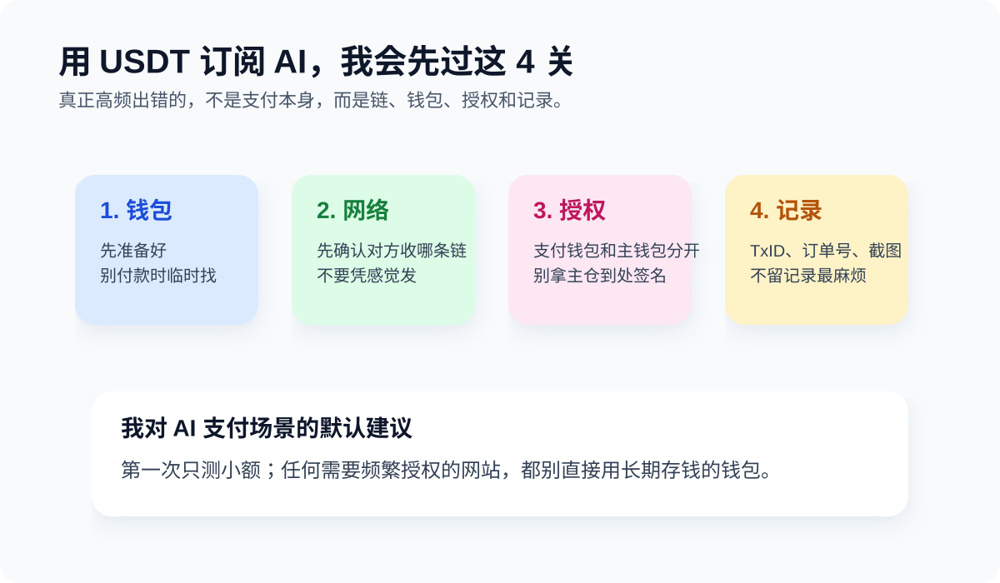

如何用 USDT 订阅 AI

很多人买 USDT，不是为了交易，而是为了把 AI 工具、海外服务或数字订阅续上。我自己越来越觉得，这类场景比“怎么买币”更能检验一个人是不是真的会用钱包。因为这篇讲的不是“能不能”，而是通常怎么走，开始前要准备什么，哪里最容易踩坑。
TL;DR
常见路径通常有两类：一类是服务商直接支持加密支付；另一类是先用 USDT 给某个支付服务或虚拟卡充值，再去订阅目标 AI 产品。路径不同，准备动作也不同，但共同点是：先确认支持的币和链，先小额测试，支付钱包和储蓄钱包最好分开。别把“能付”误会成“可以随便付”。
常见路径通常有两类：一类是服务商直接支持加密支付；另一类是先用 USDT 给某个支付服务或虚拟卡充值，再去订阅目标 AI 产品。路径不同，准备动作也不同，但共同点是：先确认支持的币和链，先小额测试，支付钱包和储蓄钱包最好分开。别把“能付”误会成“可以随便付”。
先看你面对的是哪条路径
路径 A：商家直接支持加密支付
这是最短路径。你只需要确认对方支持什么网络、什么币、金额规则和支付时效，然后付款。听起来简单，但我自己的经验是，越是这种“看起来最短”的路径，越容易让人少看一行规则。
路径 B：USDT → 中间支付 / 虚拟卡 → AI 订阅
这是更常见的现实路径。兼容性通常更高，但步骤也更多。好处是你能覆盖更多暂不直接支持加密支付的产品；坏处也很明显：环节一多，出错点就跟着变多。
开始前建议先准备这 4 件事
- 准备自己的钱包：后面所有充值、收款、付款、核对都要靠它。
- 确认网络：比如对方收的是 TRC20 还是其他链。
- 把支付钱包和储蓄钱包分开：拿来付款的地址和长期存钱的地址，最好别混用。
- 保留凭证：TxID、订单号、截图都留着，出问题时比情绪有用。
我会让你顺手看的官方参考
如果你准备长期用 TRON / USDT 支付海外服务，这几份资料很适合和这篇一起看。
真正容易出错的地方
- 付到错误网络：这类错误通常最伤，因为对方未必能帮你处理。
- 第一次直接大额：对新商家、新工具、新路线，先小额测试。
- 拿主钱包到处授权：以后如果权限滥用，损失可能远大于订阅费。
- 不留付款记录：没有 TxID，后续对账只会变成各说各话。
Beginner-friendly option
如果你需要一个更容易上手的自托管钱包来做 TRON / USDT 支付准备，imToken 是我愿意给新手的一个起步选项。原因很简单：把钱包、地址、收款和转账这几件最基础的事先做稳，比到处试新工具更重要。
如果你需要一个更容易上手的自托管钱包来做 TRON / USDT 支付准备，imToken 是我愿意给新手的一个起步选项。原因很简单：把钱包、地址、收款和转账这几件最基础的事先做稳，比到处试新工具更重要。
我对新手的默认建议
- 先把钱包准备好，而不是付款时临时找工具。
- 第一次只测一笔小额。
- 任何需要频繁授权的网站，都不要直接用长期存钱的钱包。
- 如果你走 TRON 路线，偶尔还得考虑资源与成本问题。
风险提醒
AI 工具、VPN、eSIM、海外服务的可用性和支付规则，会因国家、地区、服务条款和商家政策不同而变化。请在操作前自行确认当地法律、服务条款和支付支持情况。任何索要助记词或私钥的“客服”都应视为高风险。
AI 工具、VPN、eSIM、海外服务的可用性和支付规则，会因国家、地区、服务条款和商家政策不同而变化。请在操作前自行确认当地法律、服务条款和支付支持情况。任何索要助记词或私钥的“客服”都应视为高风险。
一句更现实的结论
我自己的结论一直很现实：AI 订阅这件事，表面看像支付问题，本质上还是钱包和流程问题。把钱包分层、网络确认、记录保留这三件事做好，成功率会比研究一堆“神奇捷径”高得多。真正的干货，通常不是某个神秘渠道，而是你把这些基础动作做对。